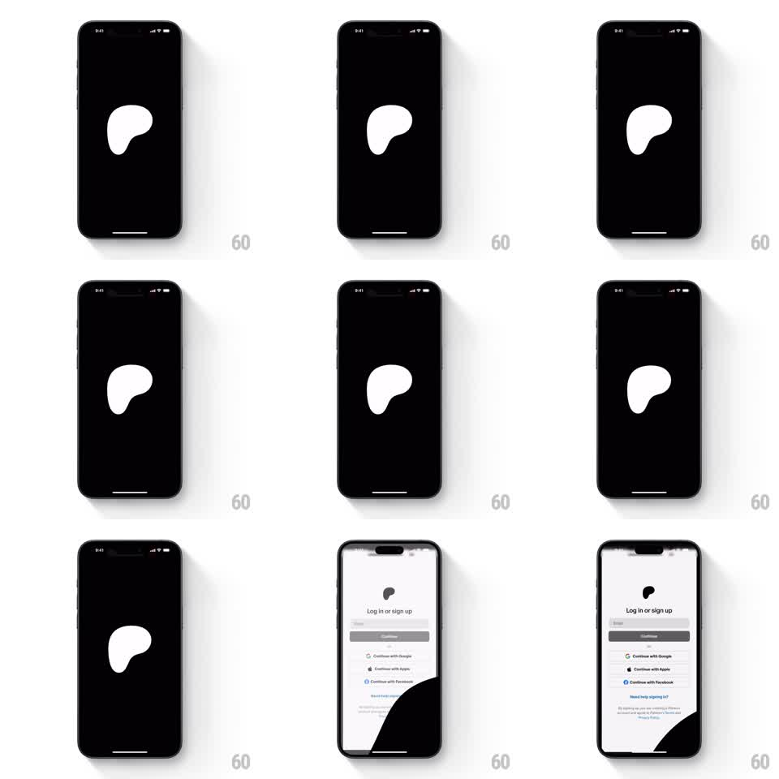

Media
Frame-by-frame

Rebuild this animation 1:1: Patreon's splash - the white organic Patreon blob on black scales up until its shape becomes the white login screen, leaving a black inverse cutout in the corner.

Rebuild this animation 1:1: Patreon's splash - the white organic Patreon blob on black scales up until its shape becomes the white login screen, leaving a black inverse cutout in the corner. ## Integration Integration: stack-agnostic spec - springs given as stiffness/damping, timed motions as duration + curve; map every value to your framework and animation library of choice. ## Scene Black screen with the white Patreon blob (rounded organic shape with its signature cutout) centered. End state: a white "Log in or sign up" screen - email field, Continue button, Continue with Google / Apple / Facebook rows - with a large black organic shape (the blob's inverse) anchoring the bottom-right corner. ## Motion spec Pattern: logo scale-up as a masking reveal. - The blob holds on black for ~800ms. - The blob scales up from center (1.0 to ~12x, ~900ms, ease-in-out), its white area growing to flood the screen. - As the white crosses ~70% coverage, the login content fades in on top of it (300ms) - the white is now the screen background. - The blob's cutout resolves into the black corner shape: it keeps scaling with the blob and settles anchored at bottom-right as the background completes. - Login elements stagger in bottom-up (field, button, social rows; 60ms apart, 250ms ease-out each) once the background lands. ## Calibration - The scale is continuous - the blob must read as the same object from icon to background. No crossfade shortcut. - Ease-in-out on the scale: an ease-out-only curve makes the flood feel abrupt. ## Reduced motion Crossfade from blob-on-black to the composed login screen. ## Don't miss - The black corner shape is the logo's negative space - its curve must match the blob's cutout exactly. - The blob idles with a subtle wobble (border-radius morph, 4s) while on black.